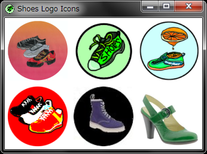

I read Noah's post in Shoes ML.
He said,
-
I'm not yet proficient enough in Ruby to code anything of great value to Shoes, but I really would like to contribute for Whyday. So I created this new icon for Shoes. Fantastic! He's got the spirit for Whyday!
Inspired by his post, I gathered Shoes Logo Icons I've seen before and wrote a tiny snippet:
require 'green_shoes'
Shoes.app title: 'Shoes Logo Icons', width: 330, height: 220 do
Dir["./*{png,jpg}"].each do |icon|
image icon, width: 100, height: 100, margin: 5
end
end
and got this:

Have you seen all of them? ;-)
Enjoy on Whyday!
ashbb